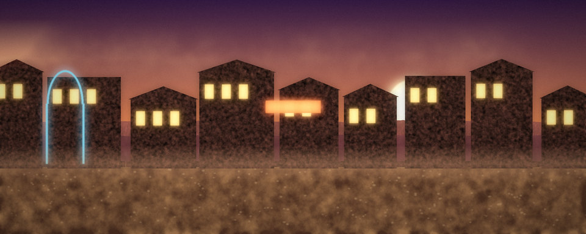
Ashfall Junction
Safe hub · Old West 23 rooms one floor
An Old West boom town where the roads between worlds meet: the Silver Spur Saloon, shops, temple, Chrome Clinic, guild and the Hall of Rebirth. Almost every room here is safe from combat.
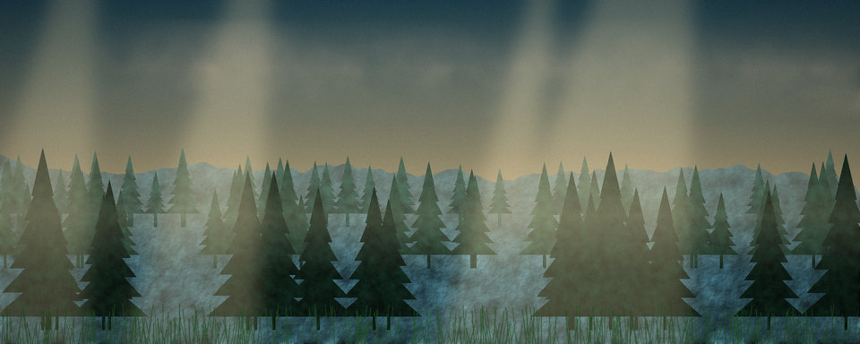
Whisperwood
Levels 1 to 7 · Fantasy 17 rooms one floor
An enchanted forest of goblins, wolves and herbs. The classic first hunting ground, with a safe camp for resting.
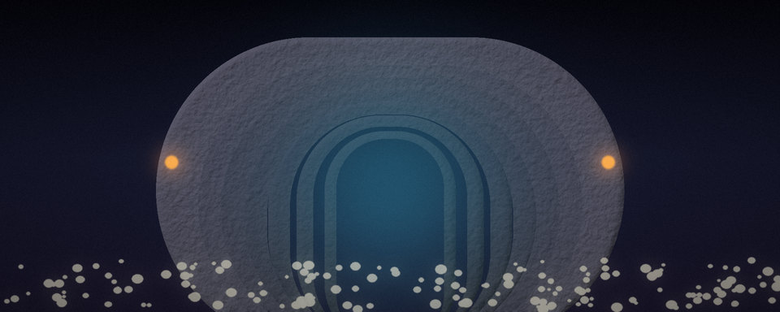
Barrow Crypts
Levels 4 to 9 · Fantasy 15 rooms one floor
Skeletons, ghouls and a warlord beneath the fallen chapel. Stone corridors and a quiet reliquary.
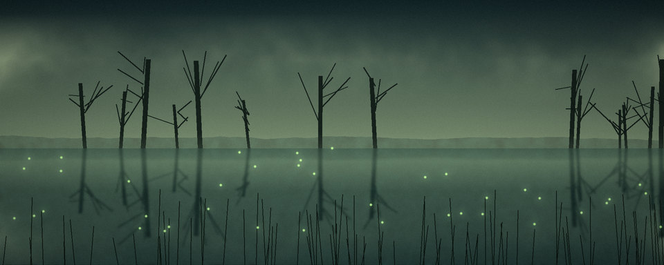
Sunken Marsh
Levels 8 to 13 · Fantasy 15 rooms one floor
A fetid marsh east of the forest stream: leeches, crocodiles, a hag and a hydra. Great for fish and herbs.
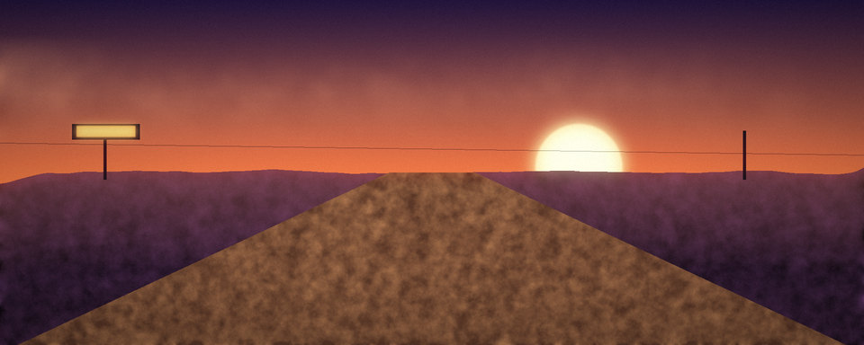
Redrock Trail
Levels 12 to 16 · Old West 13 rooms one floor
Outlaw country east of Ashfall, with the town of Dry Gulch and its Rattlesnake Saloon. Outlaws and Red Jack Calloway guard the crossroads to the Dunes and Frostpeak.
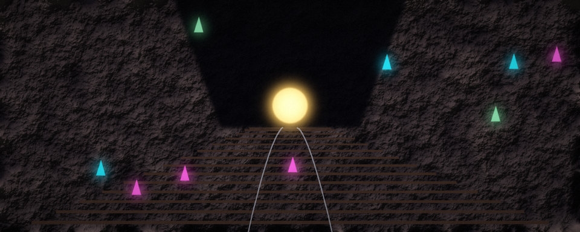
Silverado Mines
Levels 12 to 17 · Old West 15 rooms one floor
A gold-rush mining camp reached from the Old Quarry, with the Lucky Strike Saloon. Cave spiders, claim jumpers and a golem-guarded forge. Best place for ore and silver.
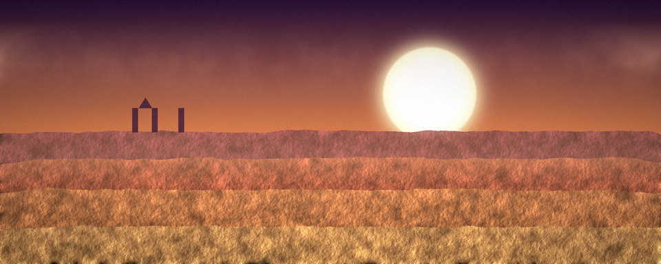
Sunscorch Dunes
Levels 18 to 24 · Fantasy 15 rooms two floors
A desert of mummies and sphinxes with the Dune Bazaar, a wraith obelisk, ruins and the pharaoh's tomb below.
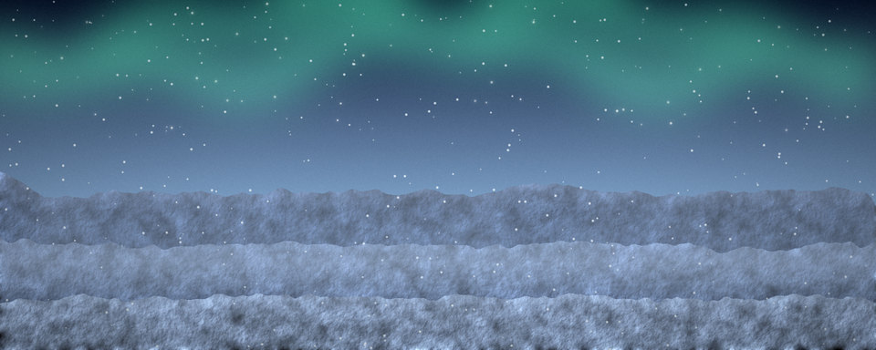
Frostpeak Station
Levels 24 to 30 · Sci-fi 15 rooms one floor
A research outpost on an ice moon: cryo-beasts, a snowbound pass and the Cryo Titan's hall. Gear up at the station hangar.
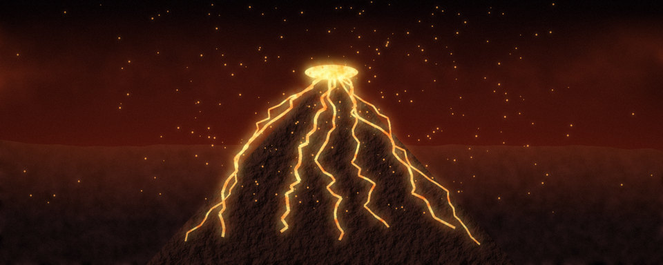
Ember Wastes
Levels 30 to 34 · Sci-fi 15 rooms one floor
A volcanic colony world of ash, lava and plasma creatures, ending at the Magma Titan's caldera.
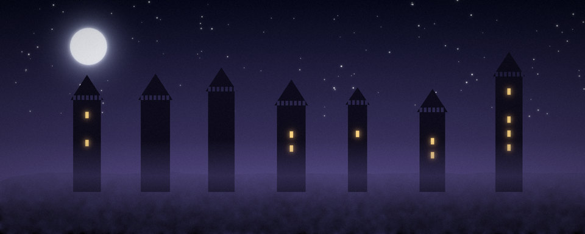
Shattered Citadel
Levels 35 to 38 · Fantasy 15 rooms one floor
A fallen castle ruled by the undead Dread Marshal. Its throne hides the stair to the Abyss.
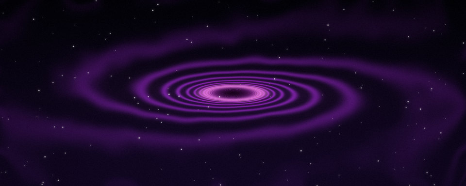
The Abyss
Levels 39 to 40 · Sci-fi 13 rooms one floor
The void between the worlds: stalkers, horrors and the Voidlord, the final boss.
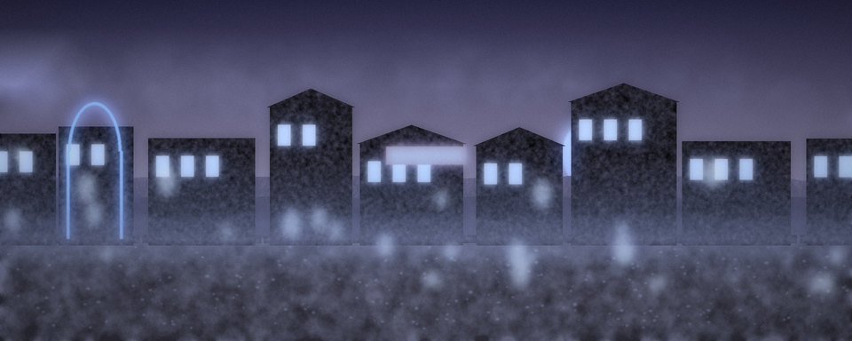
Tombstone Gulch
Levels 10 to 14 · Old West 15 rooms one floor
A ghost town off the Redrock Trail, with the Silver Dollar Saloon, a general store and Sheriff Whitlock. Ghost outlaws, skeleton deputies and Ghost Marshal Dalton in the bank vault.
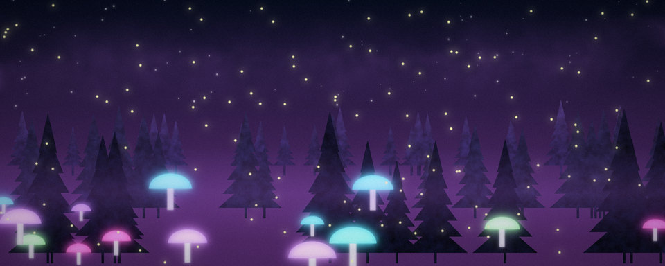
Thornwild Court
Levels 15 to 19 · Fantasy 14 rooms one floor
A fey realm of briars and mushrooms beyond the marsh causeway, with the Moonwell, the Pixie Market and Warden Sylwen. Pixie thieves, fey hounds and Thorn Queen Mab.
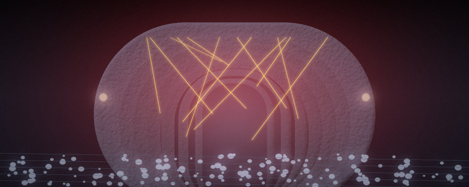
Starship Aurora
Levels 22 to 26 · Sci-fi 15 rooms one floor
A crashed starship in the Sunscorch Dunes, with a survivors galley, a med bay and a quartermaster. Security drones, mutated crew and the ship mind Helix on the bridge.
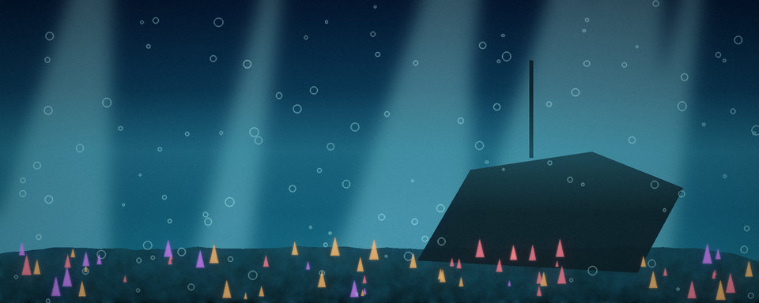
The Drowned Reach
Levels 27 to 31 · Fantasy 14 rooms one floor
A sunken kingdom beneath the frozen waterfall, with the Tidal Chapel, the Pearl Market and Captain Marrow. Drowned sailors, sirens and the Leviathan of the Reach.
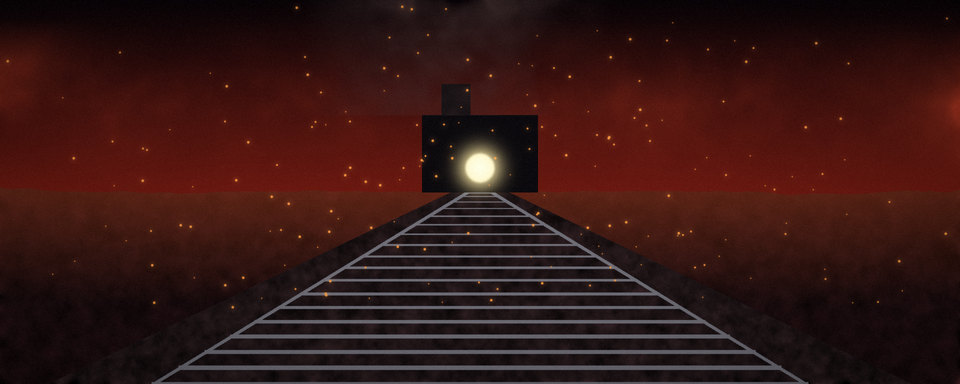
Brimstone Rail Yard
Levels 32 to 36 · Old West 14 rooms one floor
A hellish railroad depot past the Basalt Steps, with the Brimstone Saloon Car and Stationmaster Cobb. Coal demons, imp conductors and the Brimstone Express itself.